Influences respectives de l'instrument et de l'instrumentiste
Hugo Pauget Ballesteros
Claudia Fritz
Philippe Lalitte
Vincent Lostanlen
Collegium Musicae
Institut Jean le Rond d'Alembert
et André Rieu
Identité intrinsèque d'un violon ?
Types de mesures
Réponses en fréquenceEnregistrementsQuestionnaires
Questions
Quelle est l'influence des paramètres de contrôle sur le son produit ?
Peut-on caractériser l'identité d'un violon à partir d'enregistrements ?
L'identité d'un violon évolue-t-elle quand on le joue ?
Identification de violons par leur son
Test d'écoute
Peut-on caractériser le son d'un violon au-delà de cette variabilité ?
Enregistrements
Bilbao*
2019
13
25
♪1
CNSM
2024
3
11
♪7
Villefavard
2026
7
10
♪7
* Enregistrements collectés par Fritz et al.
Représentations
Ce spectre moyen est appelé LTAS
Classification
Résultats
De bonnes performances...... qui varient en fonction des données d'apprentissage
Que contiennent nos représentations (LTAS) ?
Problème : nos spectres moyens sont de grande dimension (1025D)
Besoin de réduire le nombre de dimensions
Solution : Analyse en Composantes Principales
Principe de l'ACP (3D vers 2D)
ACP sur les LTAS (1025D vers 2D)
Nos données sont organisées par extraits, et pas par violons !
Comment y remédier ?
Solution 1 : changer de projection (Analyse Discriminante Linéaire)
Solution 2 : changer de représentation (source-filtre)
Principe de l'ADL (3D vers 2D)
ADL sur les LTAS (1025D vers 2D)
Solution 2 : Estimation du filtre
Solution 2 : ACP sur les filtres estimés
Conclusion
Il est possible de caractériser l'identité sonore d'un violon à partir d'enregistrements, au delà de plusieurs facteurs de variabilité (violoniste, morceau joué)
L'identité sonore d'un violon évolue-t-elle quand on le joue ?
"Le son d'un violon s'améliore quand il est joué..."
Il "s'ouvre"
"On peut considérer comme une vérité établie qu'un instrument n'acquiert pas
un son beau et mélodieux en vieillissant, mais grâce à une
pratique régulière."
"Do you know how to open a violin? [Because] I have a way"
Effet d'ouverture
Otto, 186070 % convaincus
Grogan et al., 2003Inta et al., 2005Piacsek et Lowery, 2023
Hypothèses
Le violon a changé
Le jeu du violoniste a changé
La perception du violoniste a changé
L'expérience
Chronologie
Pré-ouverture
Ouverture
Post-ouverture
Chronologie
Pré-ouverture
Ouverture
Storage
6 mois
Post-ouverture
Chronologie
Pré-ouverture
Ouverture
Post-ouverture
Mesures
Réponses en fréquence
Enregistrements
Évaluation des violons
Motion Capture
Test d'écoute
Résultats
H1 : "Le violon a changé"
Réponses en fréquenceEnregistrements - Groupe TémoinTest d'écoute - Violoniste Témoin
Le violon test n'a pas changé plus que les violons témoins
H2 : "Le jeu de la violoniste a changé"
Test d'écoute - Violoniste TestMotion Capture - Violoniste Test
Le jeu de la violoniste test n'a pas plus changé sur le violon test que sur les violons témoins
H3 : "La perception de la violoniste a changé"
Notation des violons - Violoniste Test
Entrevues - Violoniste Test
"[J'ai trouvé] le violon plus facile à jouer"
"[J'ai permis] de le faire s'exprimer pleinement"
"Le violon s'est développé agréablement"
Oui et non !
Effet d'ouverture : explications
"[J'ai trouvé] le violon plus facile à jouer"
Adaptation sensorimotrice
"Le violon s'est développé agréablement"
Biais d'attente
Limites
Un seul violon test / une seule violoniste test
Évolution naturelle
La charge de la preuve doit s'inverser
Conclusion
Résumé
Quelle est l'influence des paramètres de contrôle sur le son produit ?
Les tendances de Schoonderwaldt se retrouvent, mais atténuées ch. 2
Les paramètres de contrôle dominent, le violon n'explique presque rien ch. 2
Peut-on caractériser l'identité d'un violon à partir d'enregistrements ?
Les humains échouent dès que l'on introduit des sources de variabilité ; la machine (LTAS + SVM) y arrive ch. 3
Même 5 ans après, la machine arrive à reconnaître un violon ch. 3
Les performances dépendent des données d'apprentissage : extrait (±10-20%), violoniste (±20-30%) ch. 3
Le LTAS décrit d'abord l'extrait ; l'ADL et le modèle source-filtre font du violon le facteur principal ch. 4
La rayonnement est une signature, mais son lien avec les enregistrements est faible ch. 5
L'identité d'un violon évolue-t-elle quand on le joue ?
Le violon test n'a pas changé plus que les violons témoins ch. 7-8
Le jeu de la violoniste test n'a pas changé plus sur le violon test que sur les témoins ch. 7-8
La perception de la violoniste a changé : adaptation, biais d'attente ch. 8
Les biais visuel et de prestige n'ont pas eu d'effet mesurable sur les évaluations ch. 9
Résultats pour les luthiers
Caractériser un violon par ses enregistrements demande un certain nombre de données : plusieurs violonistes, ou des extraits longs et variés ch. 3
Les mesures de rayonnement sont une signature du violon, mais leur lien avec le son joué reste à établir ch. 5
L'ouverture relève plutôt de la perception du violoniste que d'un changement de l'instrument ch. 7-8
Perspectives
Lien entre mesures acoustiques / enregistrements ch. 5
Interprétabilité de l'identité sonore qui soit pertinente perceptivement
Figure 2.1 Reference: spectral centroid measured by Schoonderwaldt (2009) with a bowing machine and monochord, as a function of bow force and bow-bridge distance, for four bow velocities.
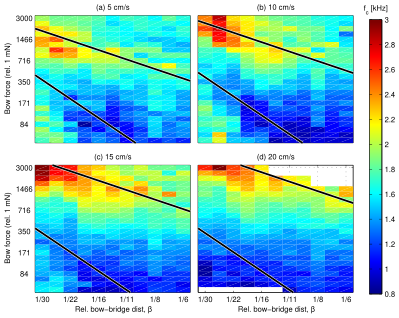
Figure 2.2 Semi-controlled recordings: median spectral centroid across the categorical grid, one panel per bow-speed level.
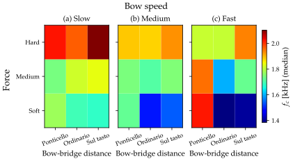
Figure 2.3 Semi-controlled recordings: distribution of spectral centroid across the levels of each bowing parameter.
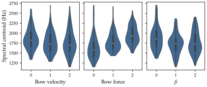
Table 2.2 Effect size () of each bowing parameter and of the violin, on all audio descriptors.
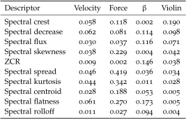
Table 2.3 Effect size of each bowing parameter and of the violin, on all 10 audio descriptors.
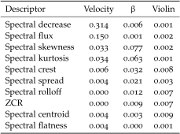
Figure 2.4 Motion capture: distribution of spectral centroid by bow velocity and by (force unavailable).
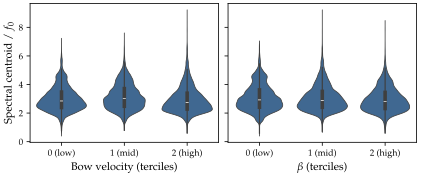
Figure 2.5 Pitch-normalised spectral centroid distribution per violin, pooled over all bowing parameters.
Figure 3.2 Results of the listening tests grouped by test category.
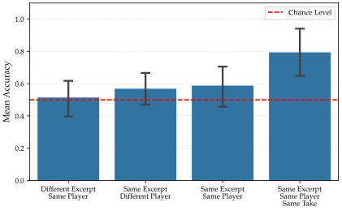
Figure 3.3 Monte-Carlo Cross-Validation accuracies for various combinations of audio features (descriptors) and classifiers.
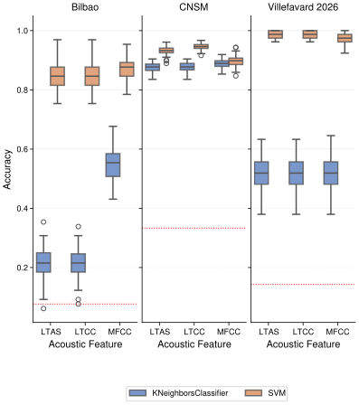
Figure 3.4 Monte-Carlo Cross-Validation accuracies of the LTAS-SVM model across various audio sampling rates.
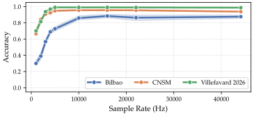
Figure 3.5 Monte-Carlo Cross-Validation accuracies of the LTAS-SVM model across varying audio excerpt durations.
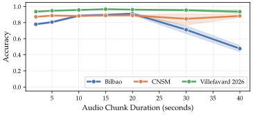
Figure 3.6 Cross-validation accuracies of the LTAS-SVM model when trained on specific musical excerpts.
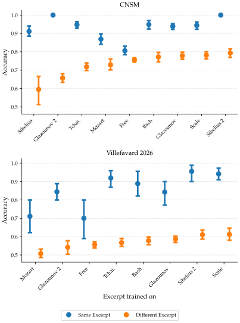
Figure 3.7 Cross-validation accuracies of the LTAS-SVM model when trained on individual players.
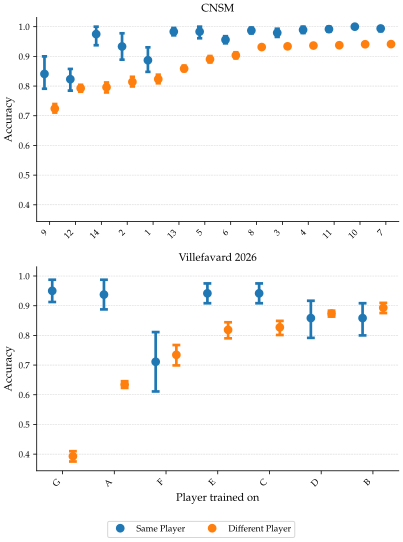
Figure 3.8 Heatmap of the LTAS-SVM classification accuracy as a function of the training data distribution, parametrised by the number of unique musicians () and the number of musical excerpts per musician ().
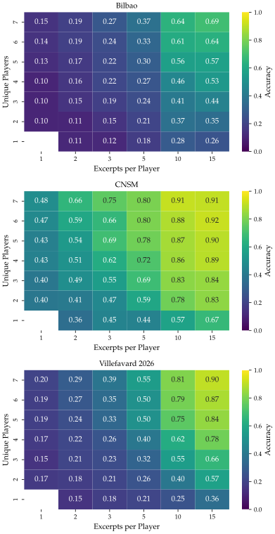
Table 3.2 Identification of the six Bilbao violins re-recorded five years later, using a model trained on their 2019 recordings.
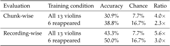
Chapitre 4 : Représentations indépendantes de l'extrait
Figure 5.1 Intra-violin CCDF against inter-violin CDF across datasets and distance metrics.
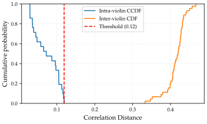
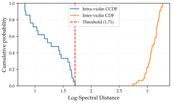
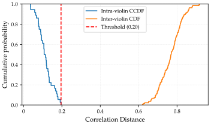
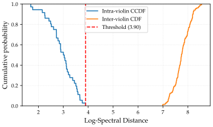
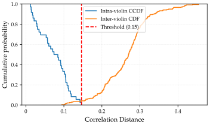
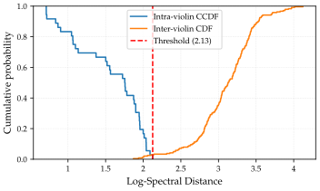
Table 5.1 Separation ratios comparing inter-violin to intra-violin distances across datasets and metrics.
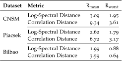
Figure 5.2 Bilbao: pairwise correlation distance between every violin in the dataset.
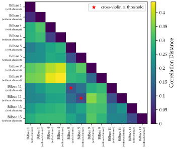
Figure 5.3 Separation ratio aggregated by chromatic semitone bands across the three datasets.
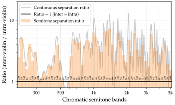
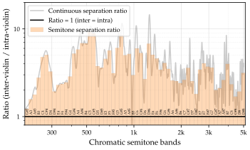
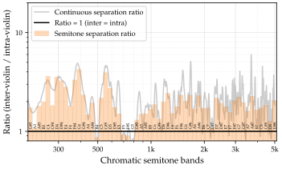
Figure 5.4 Continuous correlation distance between the recording made on the Stoppani violin and the measured radiativities of the Stoppani, Levaggi and Klimke violins, overlaid on the STFT spectrogram.
Figure 5.5 Event-Triggered Averaging of the correlation distance (between the recording of the Stoppani violin and the radiativities of the Stoppani, Levaggi and Klimke violins) across the detected note attacks.
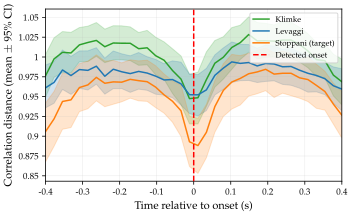
Figure 5.6 Measured vs. reconstructed radiativity using raw LTAS for two instruments of the Bilbao dataset.
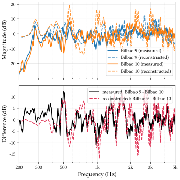
Figure 5.7 Measured vs. reconstructed radiativity using source–filter decomposition for two instruments of the Bilbao dataset.
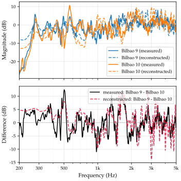
Figure 5.8 Measured vs. reconstructed radiativity using raw LTAS for two instruments of the CNSM dataset.
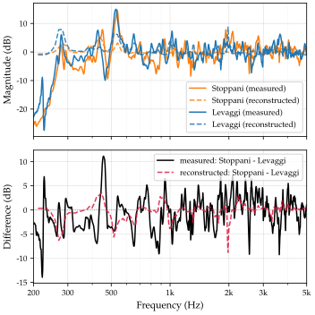
Figure 5.9 Measured vs. reconstructed radiativity using source–filter decomposition, for two instruments of the CNSM dataset.
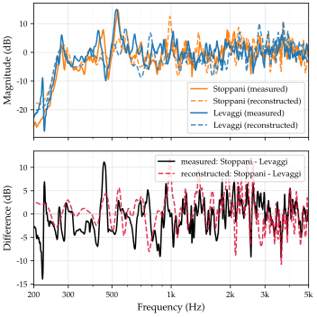
Table 5.2 Reconstruction fidelity comparing extracted audio features against measured physical radiativity.
Figure 7.3 Input admittance measured at the bridge for the Test Violin and the two Control Violins.
Figure 7.4 LTAS of scales recorded on the Test Violin and the two Control Violins.
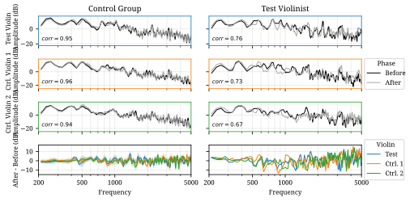
Figure 7.5 Aligned bow position profiles () recorded on the Test Violin and the Test Violinist’s Personal Violin, during playing by the Test Violinist.
Figure 7.6 As Figure 7.5, but for bow velocity ().
Figure 7.7 As Figure 7.5, but for bow-bridge distance ().
Figure 7.8 As Figure 7.5, but for bow-string distance.
Figure 8.2 Frequency histograms of the baseline reliability () for each criterion (one per row) for the Control Group and the Test Violinist, modelled as normal distributions centred at 0.
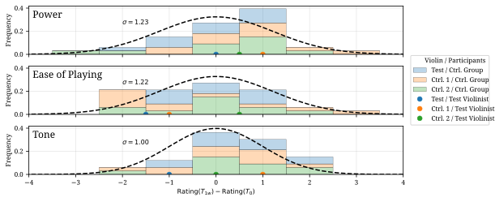
Figure 8.3 Histogram of the baseline reliability of the listening test (Before vs. Before pairs).
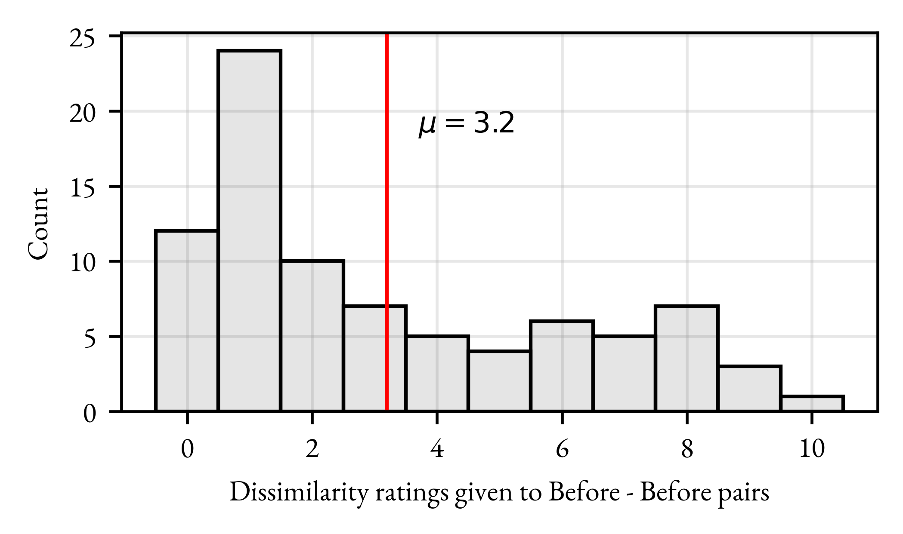
Figure 8.4 Violin ratings given by the Control Group for the Test Violin and two Control Violins across three criteria: Power, Ease of Playing, and Tone.
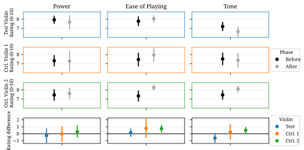
Figure 8.5 Results of the non-superiority test for the Control Group ratings.
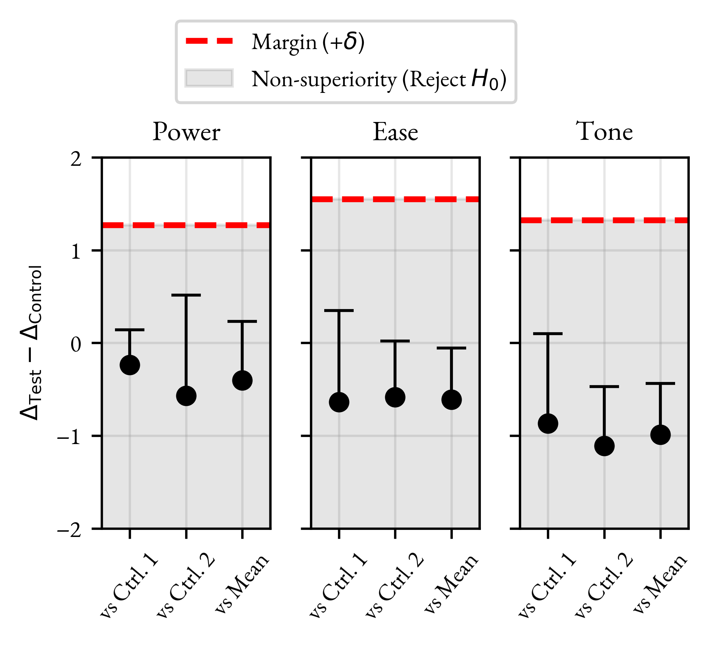
Figure 8.6 Results of the pairwise listening test on pairs recorded by a Control Violinist.
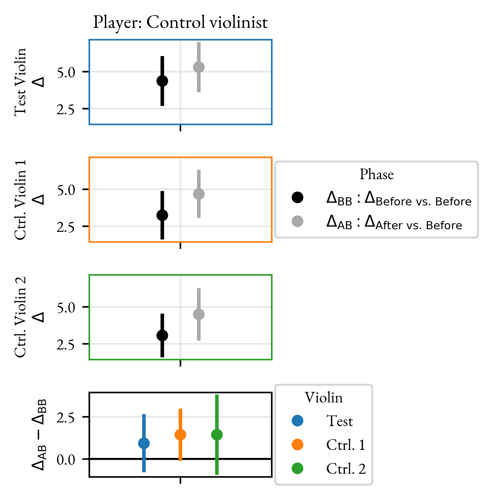
Figure 8.7 Results of the non-superiority test for the listening panel evaluating the Control Violinist.
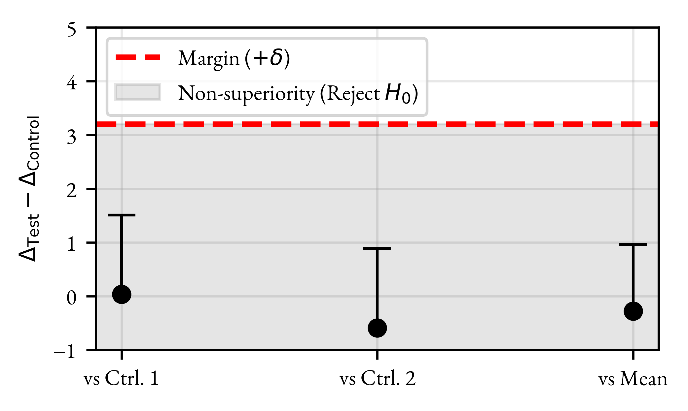
Figure 8.8 Results of the pairwise listening test on pairs recorded by the Test Violinist.
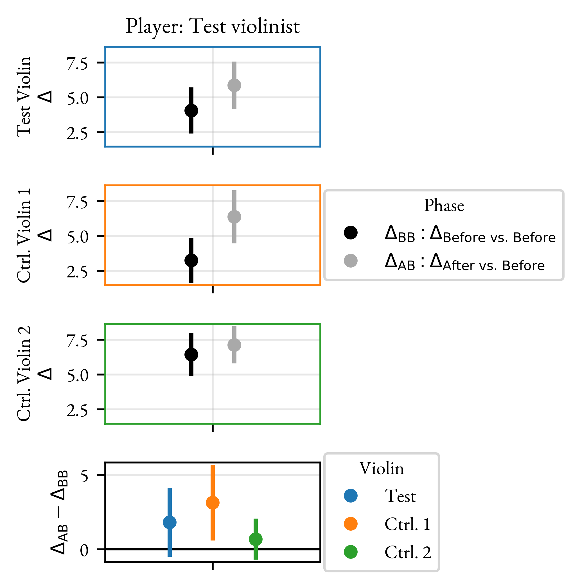
Figure 8.9 Results of the non-superiority test for the listening panel evaluating the Test Violinist.
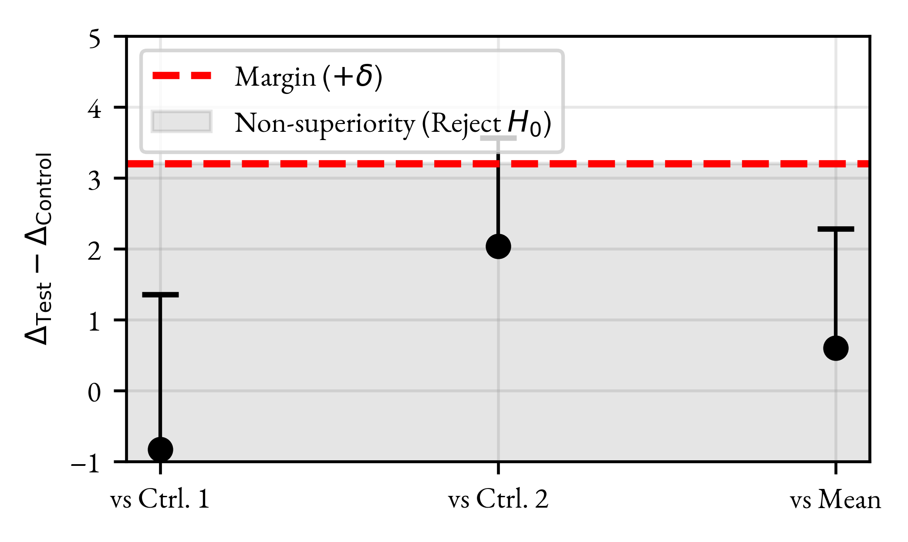
Figure 8.10 Violin ratings given by the Test Violinist for the Test Violin and two Control Violins across three criteria: Power, Ease of Playing, and Tone.
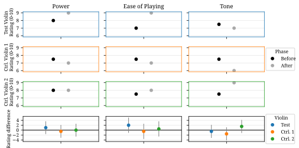
Figure 8.11 Results of the single-case superiority test evaluating the Test Violinist’s ratings.